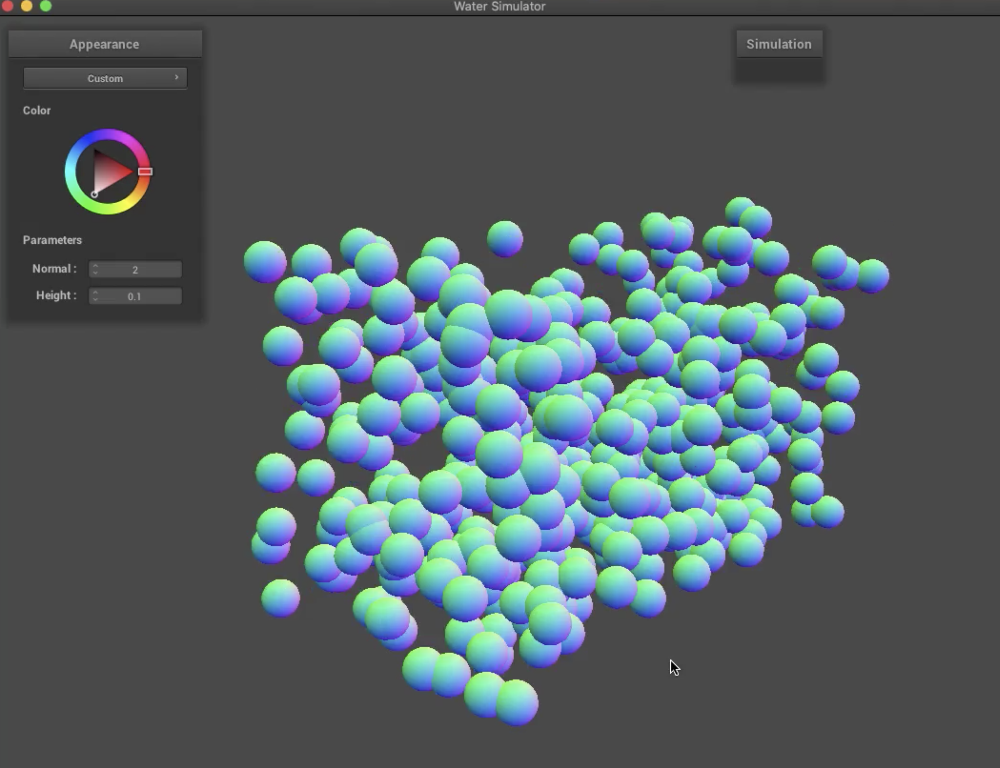
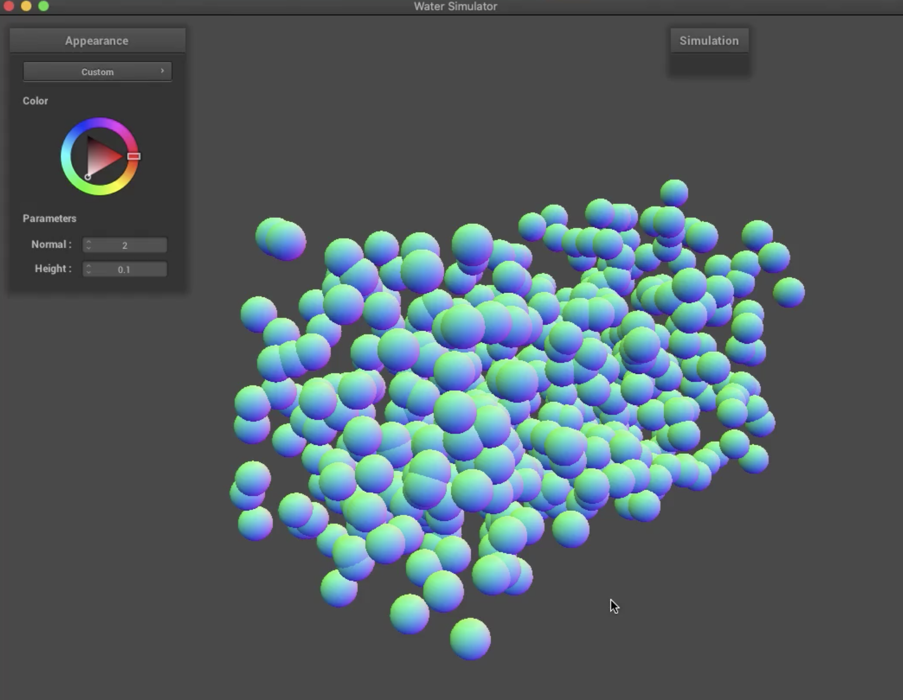
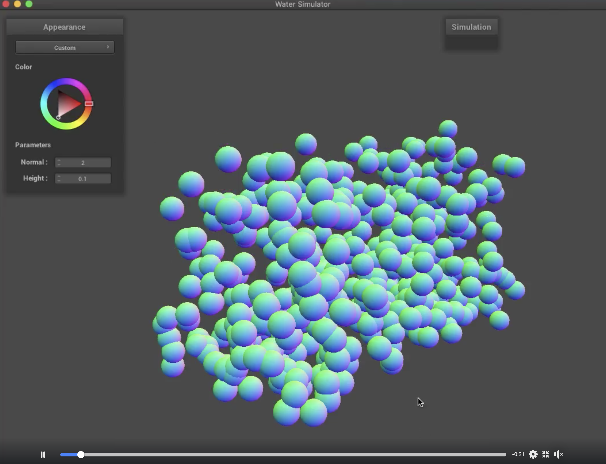

At the beginning of this project, we set a goal of completing a realistic water simulation using particle-based simulation in which we simulate the movement of water in a small box-like area given initial conditions and forces. In addition to just simulating the movement of water, we also wanted to simulate interaction between water and some solid objects within the box. As of right now, we’re well on track to completing our baseline plan. We did set some stretch goals of potentially adding in water evaporation, but we think that may be a bit too ambitious at this point in the semester, so we’ll most likely be updating our plan so that we’re just aiming to finish the baseline project and not focusing too much on stretch goals.
Our goal for this milestone was to set up the basic structure of our water and simulate basic movement, so the first thing that we worked on was creating the actual water structure. We decided to use the ClothSim code as a starting point for our project, so we took inspiration from the point mass/spring structure of the cloth and designed our water to be composed of particles (which were similar to point masses in the cloth). Each particle has a static start position, current position, previous position (meaning position at the previous timestep), velocity, forces (which is the total sum of forces on the particle at the current timestep), pressure, mass and density.
At the beginning of the simulation, each particle is assigned a random position within the box volume as well as a random velocity between +/- 0.125. Each timestep, we update the positions of all of the particles by first calculating the total external force on the particle by summing up the external accelerations on the particle and then multiplying by the mass of the particle (since F = ma). Then, we go through all of the particles, and for each, we calculate the force due to pressure, where the pressure is calculated using the particle’s density * gravity. We calculate the particle’s density by finding the distance between the current particle and every other particle in the water, then taking each distance, calculating the Gaussian kernel with that distance, and scaling that kernel value by the mass of the other particle. The Gaussian Kernel is either 0 if the distance between the two particles is >= 2 * h (where h is the smoothing width, we set this to 0.4) or 1 / (pi ^1.5 * h ^ 3) * e ^ (distance ^ 2 / h ^ 2) if the distance between the two particles is < 2 * h. The pressure value calculated between the current particle and each other individual particle is added to the total forces acting on the particle.
Once we’ve found the total force on the particle, we divide by the particle’s mass to get the particle’s acceleration. We then update the particle’s velocity by incrementing by acceleration * delta_t, and finally, we update the particle’s position by its velocity * delta_t.
So far, our water simulation doesn’t totally look like water right now because the particles are still pretty separated, so it doesn’t necessarily look like a cohesive body of water. However, the particle motion in our simulation does look pretty good. Here are some screenshots of our simulation:
|  |  |
|  |
Slides linked here
Video linked here